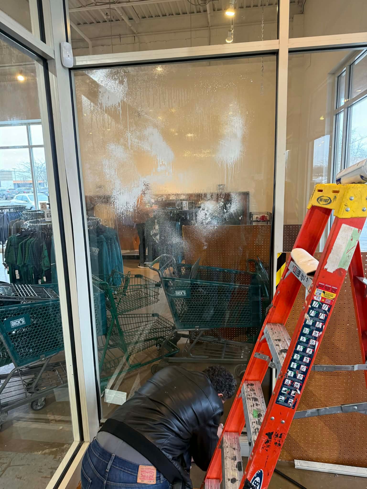

Storefront Door Installation
Complete storefront glass door installation for retail stores, restaurants, and commercial buildings in Washington DC.
Whether you're upgrading a storefront entrance, replacing a damaged glass door, or installing new glass doors for a commercial build-out, Capital Glass Door provides glass door installation across Washington DC, Arlington, Alexandria, Maryland, and the DMV. We handle single-door replacements and multi-door entrance systems with attention to glass type, hardware, fit, and operation.
Our glass door installation service covers new installs and full replacements for commercial and residential properties:
Complete storefront glass door installation for retail stores, restaurants, and commercial buildings in Washington DC.
Glass entry doors for office lobbies, suite entrances, and corporate reception areas with professional hardware.
Full door system replacements including frame, glass, hardware, and closer — coordinated for minimal business disruption.
Examples of glass entrance, door, and hardware configurations:




Glass door installation follows a structured assessment, sourcing, installation, and final-check process:
We evaluate the opening, measure for the door system, and confirm glass type, hardware, and applicable project requirements.
Glass and door components are fabricated or sourced to match the agreed specifications and opening.
The door system is installed with the required anchoring, hardware, and weather sealing for the opening.
We test operation and review hardware alignment and adjustments before completing the work.
Call to discuss commercial glass door installation in Washington DC & the DMV.